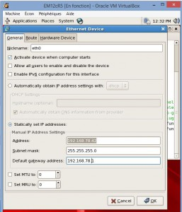

|
|
This was first published on https://blog.dbi-services.com/cloud-control-12c-on-your-laptop (2015-11-13)
Republishing here for new followers. The content is related to the the versions available at the publication date
Today every DBA should have a lab on his laptop. This is where I reproduce most of cases before opening a SR, or to investigate something, to demo, to learn new features, or to prepare an OCM exam. I’ve a few basic VirtualBox VM with single instance databases (11g and 12c, SE and EE, CDB and non-CDB, etc). I’ve the RacAttack environement with a 3 nodes RAC in 12c on OEL7. But in order to prepare for OCM12c upgrade, I need also a Cloud Control 12c. Here is how I got it without having to install it. Oracle provides some VirtualBox images, and there is one with Oracle Enterprise Manager Cloud Control 12c Release 5 (12.1.0.5) and a database (11.2.0.4) for the repository.
You can get the image from: https://edelivery.oracle.com
Filter products by ‘Linux/OVM/VMs’ and search for ‘Enterprise Manager':
It’s 17GB in total to download, so be patient:
You can also download a wget script to get all files:
So you have 6 files and you can unzip them. When you see the compression ratio you can ask why it is zipped…
Then concatenate all .ova files:
C:\Users\frp>cd /d F:\Downloads F:\Downloads>type VBox*.ova > EM12cR5.ovaand you can import it with VirtualBox as any OVA.
I have all my VMs on the host-only network (192.168.78.1 in my case). On the VM configuration, I set the first network card on ‘host only’ network and the second one as NAT to be able to access internet. If you imported the OVA without changing the MAC addresses, here they are: 0800274DA371 and 08002748F74B
Now I can start the VM and login as root – password welcome1
My keyboard is Swiss French layout, so I change it in System/Administration/keyboard
Then I want to be able to ssh to the machine so I set the network (System/Administration/Network)
Here is my configuration in my case; 
Then I activate the interface and can connect with ssh: $ ssh root@192.168.78.42
I want to communicate with the other VMs to discover databases, and to access via web, so I disable the firewall:
[root@emcc ~]# /etc/init.d/iptables stop Flushing firewall rules: [ OK ] Setting chains to policy ACCEPT: filter [ OK ] Unloading iptables modules: [ OK ] [root@emcc ~]# chkconfig iptables off
then I can connect as oracle
$ su - oracle@192.168.78.42 Installation details of EM Plugin Update 1 12.1.0.5.0 ..... EM url: https://emcc.example.com:7799/em Ports used by this deployment at /u01/OracleHomes/Middleware/oms/install/portlist.ini Database 11.2.0.4.0 location: /u01/OracleHomes/db Database name: emrepus EM Middleware Home location: /u01/OracleHomes/Middleware EM Agent Home location: /u01/OracleHomes/agent/core/12.1.0.5.0 This information is also available in the file /home/oracle/README.FIRST To start all processes, click on the start_all.sh icon on your desktop or run the script /home/oracle/Desktop/start_all.sh To stop all processes, click on the stop_all.sh icon on your desktop or run the script /home/oracle/Desktop/stop_all.sh
You just have to follow what is displayed
Here is how to start everything in the right order.
$ /home/oracle/Desktop/start_all.sh Starting EM12c: Oracle Database, Oracle Management Server and Oracle Management Agent ..... Starting the Oracle Database and network listener ..... LSNRCTL for Linux: Version 11.2.0.4.0 - Production on 12-NOV-2015 12:46:01 Copyright (c) 1991, 2013, Oracle. All rights reserved. Starting /u01/OracleHomes/db/product/dbhome_1/bin/tnslsnr: please wait... TNSLSNR for Linux: Version 11.2.0.4.0 - Production Log messages written to /u01/OracleHomes/db/product/dbhome_1/log/diag/tnslsnr/emcc/listener/alert/log.xml Listening on: (DESCRIPTION=(ADDRESS=(PROTOCOL=tcp)(HOST=localhost.localdomain)(PORT=1521))) Connecting to (ADDRESS=(PROTOCOL=tcp)(HOST=)(PORT=1521)) STATUS of the LISTENER ------------------------ Alias LISTENER Version TNSLSNR for Linux: Version 11.2.0.4.0 - Production Start Date 12-NOV-2015 12:46:01 Uptime 0 days 0 hr. 0 min. 0 sec Trace Level off Security ON: Local OS Authentication SNMP OFF Listener Log File /u01/OracleHomes/db/product/dbhome_1/log/diag/tnslsnr/emcc/listener/alert/log.xml Listening Endpoints Summary... (DESCRIPTION=(ADDRESS=(PROTOCOL=tcp)(HOST=localhost.localdomain)(PORT=1521))) The listener supports no services The command completed successfully SQL*Plus: Release 11.2.0.4.0 Production on Thu Nov 12 12:46:02 2015 Copyright (c) 1982, 2013, Oracle. All rights reserved. Connected to an idle instance. SQL> ORACLE instance started. Total System Global Area 1469792256 bytes Fixed Size 2253344 bytes Variable Size 855641568 bytes Database Buffers 603979776 bytes Redo Buffers 7917568 bytes Database mounted. Database opened. SQL> System altered. SQL> Disconnected from Oracle Database 11g Enterprise Edition Release 11.2.0.4.0 - 64bit Production With the Partitioning, OLAP, Data Mining and Real Application Testing options Starting the Oracle Management Server ..... nohup: appending output to `nohup.out' opmnctl startall: starting opmn and all managed processes... Starting the Oracle Management Agent ..... Oracle Enterprise Manager Cloud Control 12c Release 5 Copyright (c) 1996, 2015 Oracle Corporation. All rights reserved. Starting agent ........................... started.And it’s ready. You can access to it from the VM console, or the host browser on https://192.168.78.42:7799/em
All passwords are welcome1.
You can discover the others hosts. I’ve put them n the /etc/hosts in the EM VM, and I’ve put the following line in all /etc/hosts where I want to install agents:
192.168.78.42 emcc emcc.example.com
Hope it helps. There are things that are quicker to do from Cloud Control when you are in OCM exam so better to know it. However, don’t rely on that only as it may not be available for all exercises.
{kind=link}
{kind=link}
{kind=link}
{kind=link}